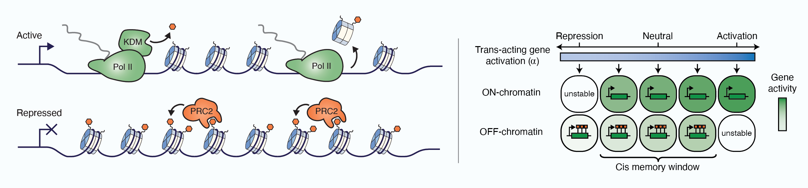
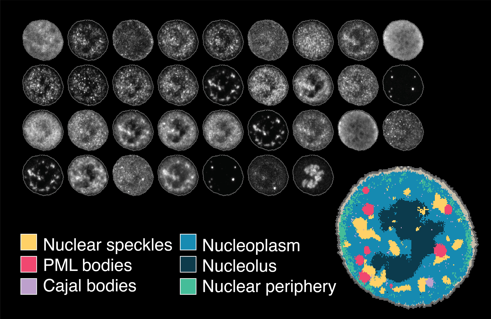

We are a new research group at Single Molecule Science: the EMBL Australia node of the University of New South Wales. We are currently recruiting PhD students and postdocs. Please contact Scott if you are interested in joining or collaborating.

We are a new research group at Single Molecule Science: the EMBL Australia node of the University of New South Wales. We are currently recruiting PhD students and postdocs. Please contact Scott if you are interested in joining or collaborating.


Hi! I am Scott. After completing my undergraduate studies in Theoretical Physics and Biology at the University of Adelaide and the University of Western Australia, I moved to the UK for my PhD at the John Innes Centre. There, I worked with Caroline Dean and Martin Howard, combining theoretical and experimental biology approaches to understand mechanisms of epigenetic memory in Arabidopsis thaliana. I then moved to Switzerland as a HFSP postdoctoral fellow, working with Lucas Pelkmans at the University of Zurich. In Lucas’ group, I shifted model systems from plants to mammalian cells, and became immersed in the wonderful world of modern single-cell biology – focusing on understanding the mechanisms by which cells coordinate gene expression with cell size. Since October 2021, I have been a group leader at Single Molecule Science at the University of New South Wales.

I completed my undergraduate degree with majors in neuroscience and pharmacology. My PhD was undertaken at University of Sydney, working with Prof Macdonald Christie, during which I studied the pharmacology of opioid analgesics across in vitro assays and rodent behavioural studies. In the course of that work, I became interested in mathematical modelling of biological systems as a tool to unpick signalling mechanisms. As part of my PhD, I completed a research period at University of Nottingham, working with Prof Meritxell Canals. There, we sought to examine the kinetics of opioid receptor signalling on a population & single molecule level. As a result of this approach to receptor signalling systems, I have become increasingly interested in using similar techniques to systematically deconstruct other biological pathways.

Hello, I am Teddy. After completing my undergraduate in Resource Biotechnology at University of Malaysia, Sarawak, I continued my MSc in Molecular Medicine under Dr Oon Chern Ein at Universiti Sains Malaysia. This project involved collaborative work together with researchers at the Karolinska Institutet, aimed at determining if manic fringe protein expression can be utilized as a biomarker for therapeutics and prognosis in kidney cancer, as well as to determine its association with immune cell infiltration. Our research group also collaborated with the Weatherall Institute of Molecular Medicine to further elucidate the expression pattern of manic fringe in blood vessels of renal cancer and in tumor angiogenesis. I am currently a PhD student researching the global control of mRNA metabolism in human cells.
Please contact Scott if you are interested in applying. More information on scholarships for Australian and international students can be found here.
We are interested in the mechanisms used by cells to regulate gene-specific and global RNA abundance – ranging from epigenetic memory and cellular decision-making to global RNA metabolism in the context of cellular physiology. We seek to generate a quantitative understanding of these processes.
Our research methodology is a combination of ’top-down’ (data-driven) and ‘bottom-up’ (hypothesis-driven) approaches. We make extensive use of high-throughput microscopy and automated image analysis, which enables detailed measurement of quantitative cellular phenotypes (for example, the abundance and localisations of specific proteins or RNAs) across large cell populations. Resulting datasets are then analysed using a variety of methods from data science. We complement these image-based approaches with functional genomics experiments, based on next-generation sequencing – providing exquisite genomic resolution, and use perturbation experiments including genome and epigenome-editing to test specific hypotheses.
Projects in the lab are often underpinned by construction of minimal mathematical models at the molecular level, which we use as a tool for exploring possible explanations of experimental results and prioritising future experiments.
We believe that the best science happens in the overlap between fields. We strive to build a diverse team and foster collaborations across fields and disciplines.
The chromatin of individual genetic loci can be set into molecular ‘states’ that control the expression of the underlying genes, and in some cases even instruct their own inheritance – acting as local epigenetic memory elements. When necessary, however, chromatin can also be reliably switched from one state to another – by processes that involve coordinated changes to the histone modifications, accessibility of regulatory sequences, and expression states of the underlying genes.
We are interested in the interplay between gene-specific diffusible regulatory factors (e.g. transcription factors), which tend to have continuous (analogue) control over gene expression, and heritable chromatin states (e.g. Polycomb-repressed chromatin), which tend to promote bi-modal (digital) stable expression states. To study these processes we use in vitro differentiation of epithelial cells from human induced pluripotent stem cells.
Further reading:
Yang, Berry et al., Science, 2017
Berry et al., Cell Systems, 2017
 Mechanistic model of self-perpetuating active and repressed chromatin states.
Mammalian cells coordinate RNA production rates with cell size to ensure RNA concentration homeostasis. We discovered that this process relies on adapting transcription rates according to nuclear mRNA concentration, so that overabundance of nuclear mRNA leads to transcriptional repression. This mechanism involves mRNA-based regulation of the activity of RNA Polymerase II, which in turn determines polymerase abundance. We are interested in further dissecting the interplay between the transcriptional machinery, nuclear RNA export and RNA degradation factors that act in concert to ensure robust mRNA concentration homeostasis.
Further reading:
Berry et al., Cell Systems, 2022
 In recent years, technological advances have made it possible to visualise tens to hundreds of proteins in single cells. This has brought with it the ability to accurately quantify the high-dimensional relationships between protein abundances and their modification states, as well as the cell-to-cell variability of their subcellular localisation and co-localisation.
In recent years, technological advances have made it possible to visualise tens to hundreds of proteins in single cells. This has brought with it the ability to accurately quantify the high-dimensional relationships between protein abundances and their modification states, as well as the cell-to-cell variability of their subcellular localisation and co-localisation.
We use Iterative Indirect Immunofluorescence Imaging (4i) throughout our research to comprehensively evaluate changes to cellular phenotypes in the context of cellular differentiation and upon perturbation of RNA metabolism. These datasets are extraordinarily rich in information, however much of this information is not easy to interpret using existing approaches. In collaboration with Lucas Pelkmans’ and Fabian Theis’ research groups, we have developed a new computational image analysis workflow called CAMPA to facilitate analysis of these data across different perturbations, at the subcellular, cellular and population scales.
Further reading:
Spitzer, Berry et al., bioRxiv, 2022
CAMPA on GitHub

Applying pixel-clustering approaches to highly-multiplexed 4i image data identifies subcellular structures in an unbiased manner. In this case, we focused on the nucleus: revealing organelles such as nuclear speckles, Cajal bodies, PML bodies and the nucleolus.Spitzer, H.*, Berry, S.*, Donoghoe, M., Pelkmans, L. and Theis, F.
bioRxiv
| PDF
| bioRxiv
| GitHub
| Read the Docs
* Equal contribution
Yin, J.-A., Scheidmann, M. C., Frick, L., Trevisan, C., Dhingra, A., Spinelli, A., Wu, Y., Yao, L., Vena, D.L., De Cecco, E., Ging, K., Liu, T., Täger, J., Rodriguez, S., Guo, J., Berry, S., Losa, M., Hornemann, S., Kampmann, M., Pelkmans, L., Hoepfner, D., Heutink, P., and Aguzzi, A.
bioRxiv
| PDF
| bioRxiv
Berry, S., and Pelkmans, L.
Trends in Cell Biology
| Journal
Berry, S.^, Müller, M., Rai, A. and Pelkmans, L.^
Cell Systems
| Journal
| bioRxiv
^ Corresponding authors
Müller, M., Avar, M., Heinzer, D., Emmenegger, M., Aguzzi, A., Pelkmans, L.^, and Berry, S.^
Scientific Data
| PDF
| Journal
| Data
^ Corresponding authors
Berry, S., Rosa, S., Howard, M., Bühler, M., and Dean, C.
Genes & Development
| PDF
| Journal
Berry, S., Dean, C., and Howard, M.
Cell Systems
| PDF
| Supplementary
| Journal
| Commentary
Yang, H.*, Berry, S.*, Olsson, T.S.G., Hartley, M., Howard, M., and Dean, C.
Science
| PDF (accepted version)
| Journal
* Equal contribution
Berry, S., Hartley, M., Olsson, T.S.G., Dean, C., and Howard, M.
eLife
| PDF
| Journal
Berry, S., and Dean, C.
The Plant Journal
| PDF
| Journal
King, J.D.*, Berry, S.*, Clarke, B.R., Morris, R.J., and Whitfield, C.
Proceedings of the National Academy of Sciences
| PDF
| Supplementary
| Journal
* Equal contribution
Richards, D.*, Berry, S.*, and Howard, M.
Cold Spring Harbor Symposia on Quantitative Biology
| PDF
| Journal
* Equal contribution
Berry, S.D., Bourke, P., and Wang, J.B.
Computer Physics Communications
| Journal
Berry, S.D., and Wang, J.B.
Physical Review A
| Journal
Berry, S.D., and Wang, J.B.
Physical Review A
| arXiv
| Journal
Find us:
Single Molecule Science
Room 311 (Level 3) Lowy Cancer Research Centre
Cnr Botany & High Sts, Building C25
UNSW Kensington Campus
Send something:
Attention: Scott Berry
Single Molecule Science
Upper Campus Store E26, Bioscience South
LG018 Loading Dock
Via Gate 11, Botany Street
UNSW Sydney NSW 2052
Australia